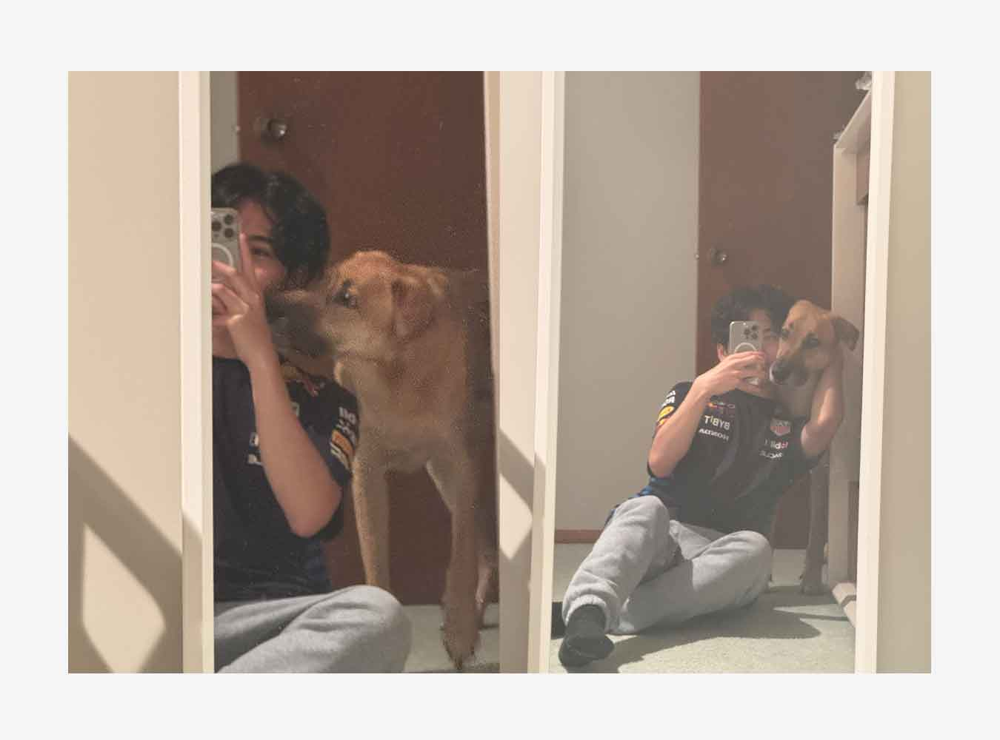
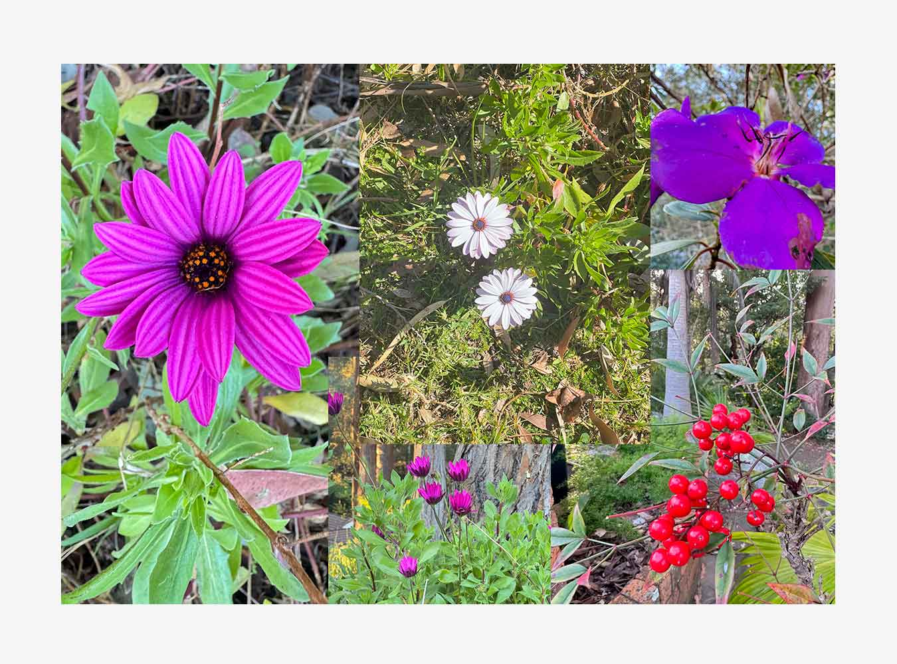
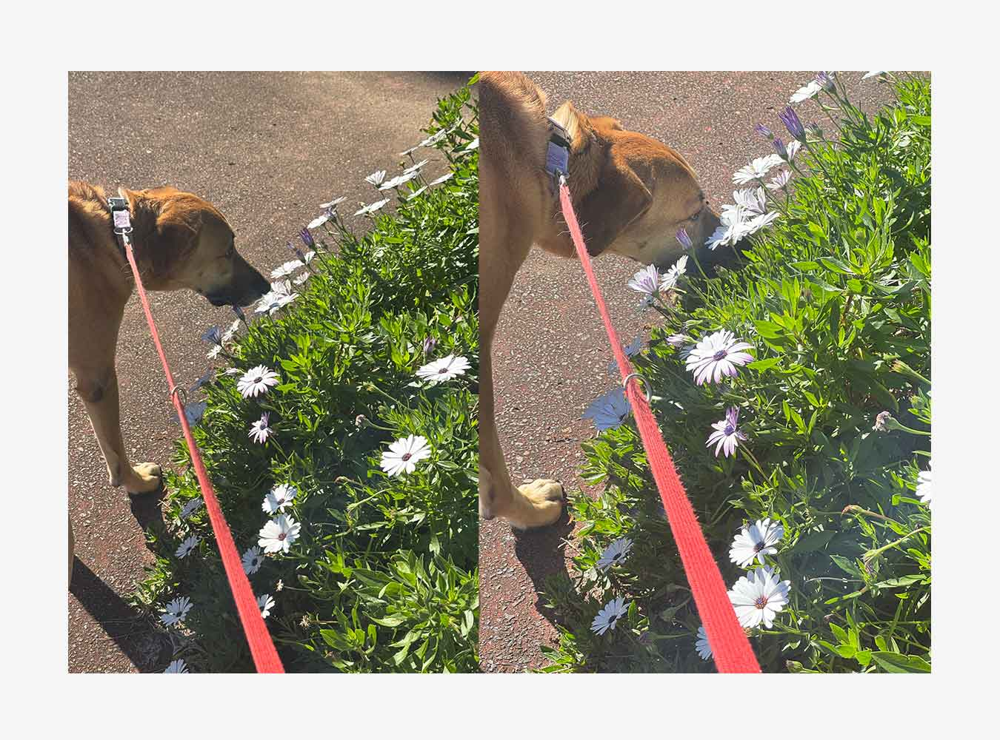
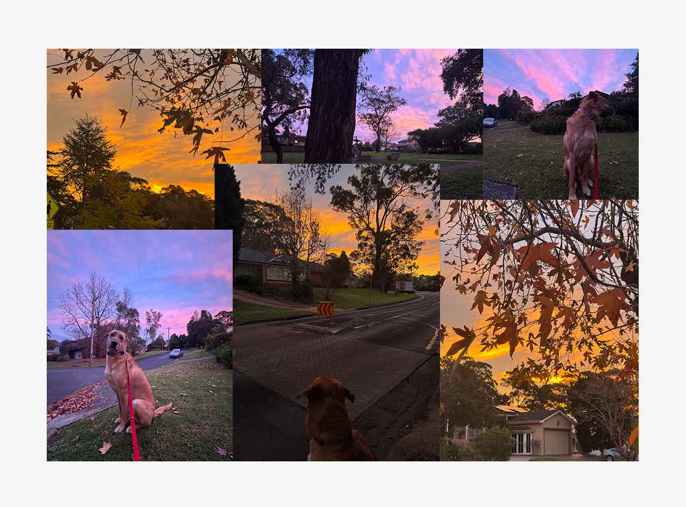
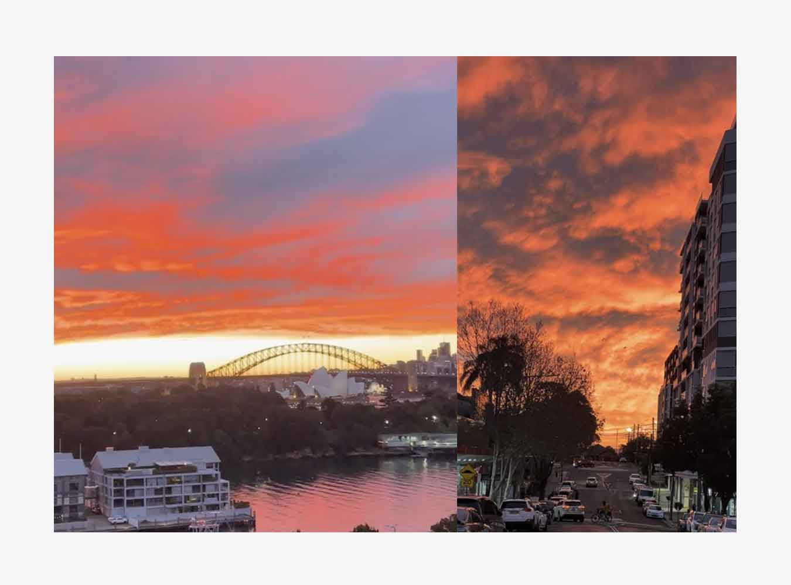
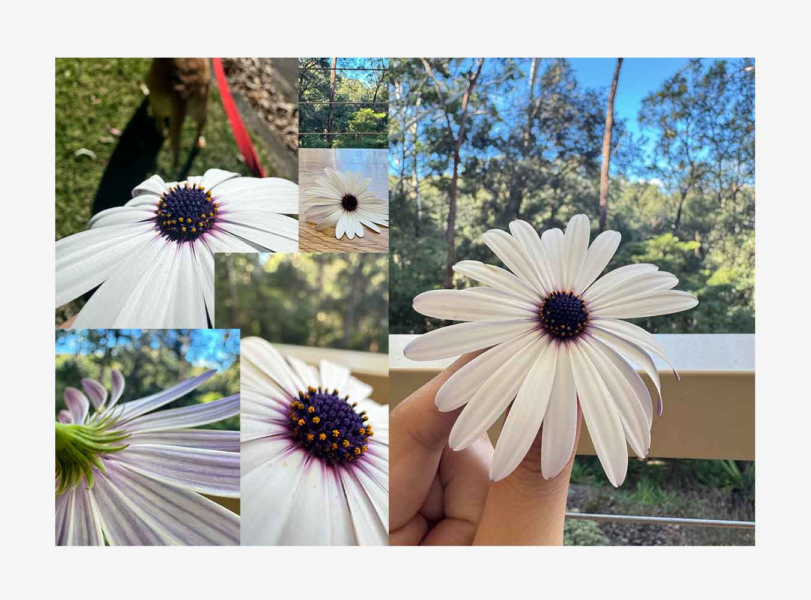

13th July 2025. The last time I felt this peace was last November 2024—the time when I got separated from Kirby. I was under a lot of stressed, wasn’t making enough money, and I didn’t know if I’ll stay in Australia for any longer.
Nevertheless, it was one of the most difficult time of my life. On this day is the first day Kirby and I together once again. I’m able to explore cooking again too, going out for walks, and appreciating life here in Sydney.

This day (and the days preceding it) is special in many ways. Part of owning a dog is the responsibility of walking them. Since Kirby’s a big dog, he requires at least 2-3 walks per day. I had been living with Kirby six-days prior, but this is the first day we are alone together and our first time walking together after awhile.
Cape marguerite. Also known as African Daisies or Osteospermum is the predominant species of daisy blooming in the middle of the winter season. Osteospermum is particularly known for its purple features which blend well with the other flowers blooming at this time of the season: red and pink Japanese Camellias which seem to be everywhere around the neighbourhood, red December Hollies which have become a culture-piece that’s associated with mistletoe imageries and also one of the December Birth Flower, and African Daisies of different varieties ranging from deep-violet trailing daisies with a mesmerizing linear pattern, and cape marguerite with white petals with a slight hint of purple undertones complemented by an ultraviolet disc.
I appreciate this place so much more than Rouse Hill (the place Kirby and I used to stay) simply because it’s more suburban. People likened to plant their own gardens and line the streets with deciduous trees. Daisies is the central theme of this piece because of what it represents on this particular day, and to me.

Daisies represent innocence, healing, purity, among many others. Moreover, I’ve came to a like the idea of birth flowers after I read a heartfelt piece from a friend about hers. Of course, I looked-up mine and it just so happens to be daisies. A flower strongly associated with the Spring Season (which is very northern-hemisphere-centric by the way hmmp!) - about new beginnings, healing, and purity. I can’t help but realize if that was me all along? I always find myself moving-on from something, prioritizing myself, and healing who I am or was just by myself. Moving to Australia was one thing, but I think a thing about me is I persisted on maintaining my innocence, my positivity, my being despite all the adversities I’ve faced before; from my horrible High School journey, COVID, and my college struggles (I wish this blog existed back then because really, I forgot what exactly those was - but the only things I remember are the feelings of pain, loneliness, and hopelessness.) Anyway, I persisted to staying true to myself, my pure child-like sense of hope, my daisy-ness.

Walking Kirby I noticed various daisy bushes of Osteospermum lining the streets that fill the place with white, purple, and red. Some have bloomed, while some are just about to. Kirby also liked to sniff on these flowers.
Anyway, perhaps that walk just reminds me of the feeling of hope or maybe better days ahead. I’m sure it is - especially with Kirby, but deep-down I still felt empty.
This day isn’t just about daisies, but two other things. One of them is media. Just before that walk, Justin Bieber just released his new album “SWAG.” It came out of nowhere honestly but I had to listen to it right away. Justin Bieber holds a special place in my heart because I associate his music to the times where I was deeply in-love during the early 2010s (One Less Lonely Girl, Favorite Girl) and early 2020s (Holy, 10,000 Hours, Anyone.) These songs perhaps embodied my personality because of its rather innocent (and sometimes mature) profession loving, which I owed to someone during both of those times. While I don’t think about that person anymore, I can’t help but be in-love with that feeling. So much that it made me who I am today. Thank you for not making me a toxic mess.
Anyway, I listened through the song, but one song stood out: DAISIES. It was so upbeat, pure, and it’s just about… loving. It reminded me of those previous songs I hold dear in the past, who I am, my “daisy-ness.” Of course, I listened to it during the walk, and that song playing with actual daisies around you is a surreal experience.
Another media which had sort of touched my soul: Superman. A few days prior, I watched James Gunn’s Superman and I just loved it so much. Perhaps what touched me in this film is the idea of persistence. The persistence to be and remember who you are, the persistence of staying kind, being good, and to love. To know that you have been loved (by my family) and that’s just who you are.
“You trust everyone and you think everyone you ever met is… beautiful.”
That’s the real punk rock.
Anyway, I loved the film for many reasons. I rewatched it on IMAX because I wanted to hear that score with proper speakers. Also of course, Krypto reminded me too much of Kirby.
The other thing happened later in the day. During my second walk with Kirby, it was later in the afternoon. I didn’t notice anything in particular during the start of the walk, but by the middle of it, I noticed something: the sky was on-fire.

Visiting the r/sydney subreddit, lots of people had posted pictures about it and it was beautiful. At first, the sky was deep-orange which is perfect with the Autumn trees backdrop. Later-on, the sky turned purple/pink. It was quite honestly one of the most beautiful experience I ever had. I wish I had been on top of a hill or something, or maybe at that spot in the eastern suburbs which overlooks the entire Sydney Harbour.

My first day alone Kirby was surreal and beautiful. From blooming daisies, inspiring media, and mesmerizing sunsets. Deep-down however, I still feel very empty inside. Maybe it’s the sheer silence I constantly feel, the feeling that I’m still alone. Nevertheless, daisies are my birth flower. Maybe it had embodied me and my personality all this time.

28th July 2025. Daisies continue to bloom during this time. I’m not the type to pick flowers. I mean, I know it doesn’t really matter since flowers will die and get replace, nor will homeowners care or notice; but I feel like killing them? Like I’m relieving them of its purpose in the world.
Anyhow, it doesn’t matter because Kirby did it for me. I picked-up this one Cape Marguerite as a reminder to me for all it symbolizes, and what it means to me.
Side-note: Another piece of media which was released this month was The Bear Season 4. Thank you writers for not trying to make Syd and Carm a thing. Was not disappointed with the season. It’s funny how this random sub-plot spoke to me. Honestly, same Sugar.